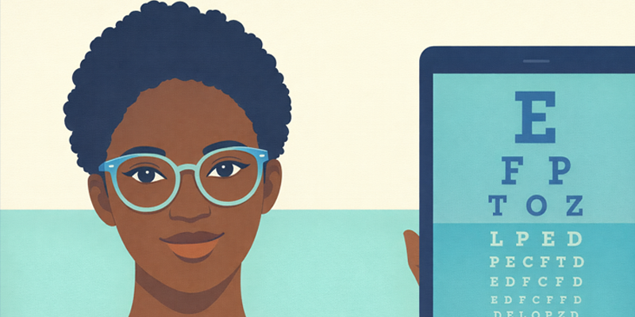
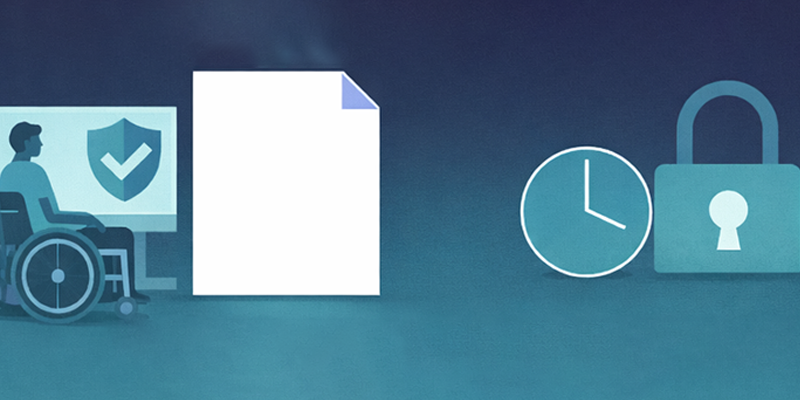

Articles 2026
Discover insightful articles on digital accessibility best practices, awareness days, and inclusive design principles. Our collection provides practical guidance to help you create accessible digital content for all users.
Featured Article: Give Non-text Content a Voice Using Alternative Text
Learn best practices for writing meaningful alternative text for accessible digital content.
Recent Articles

Protecting your Eyes - Tools for Your Visual Comfort
Learn about tools and strategies for protecting your vision and creating comfortable digital workspaces.
Your Digital Signature Speaks, So Make It Awesome and Accessible!
Learn how to create an accessible email signature that represents you and your team in an inclusive way.

Inclusive Digital Safety: Where IT Accessibility Meets Cybersecurity
Explore how accessibility and cybersecurity work together to create digital experiences that are both safe and inclusive for everyone.